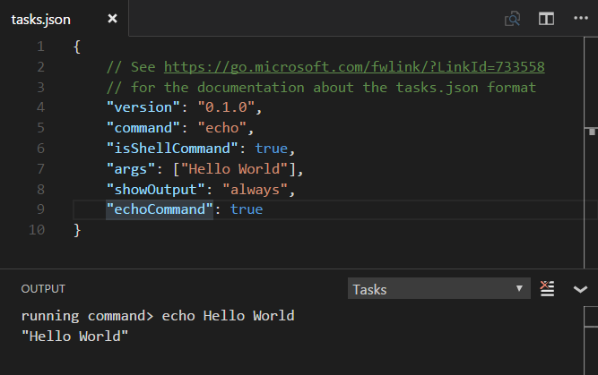

Tasks (legacy version)
This documentation describes the legacy Tasks system in Visual Studio Code version 1.13 and earlier. If you want to learn about the latest Tasks 2.0, please refer to the Tasks topic.
Developers use lots of tools, mostly run from the command line, to automate jobs outside the inner software development loop (edit, compile, test and debug). Given their importance in the development life-cycle, it is very helpful to be able to run them and analyze their results from within Visual Studio Code.
Note: Task support is only available when working on a workspace folder. It is not available when editing single files.
Hello World
Let's start with a simple "Hello World" task which will display text to the OUTPUT panel when run.
Create an empty folder "mytask" and start VS Code from that folder.
mkdir mytask
cd mytask
code .
Tasks are defined in a workspace tasks.json file and VS Code has templates for common task runners. In the Command Palette (kb(workbench.action.showCommands)), you can filter on 'task' and can see the various Task related commands.

Select the Tasks: Configure Task Runner command and you will see a list of task runner templates. Select Others to create a task which runs an external command.
Note: If you don't see the list of task runner templates, you may already have a
tasks.jsonfile in your folder and its contents will be open in the editor. Close the file and either delete or rename it for this example.
You should now see a tasks.json file in your workspace .vscode folder with the following content:
{
"version": "0.1.0",
"command": "echo",
"isShellCommand": true,
"args": ["Hello World"],
"showOutput": "always"
}
In this example, we are just running the echo shell command with "Hello World" as an argument.
Test the echo task by running Tasks: Run Task and selecting echo from the dropdown list. The OUTPUT panel will open and you'll see the text "Hello World".
You can get IntelliSense on tasks.json variables and their values with hover and trigger smart completions with kb(editor.action.triggerSuggest).

Tip: You can run your task through Quick Open (
kb(workbench.action.quickOpen)) by typing 'task',kbstyle(Space)and the command name. In this case, 'task echo'.
Output Window Behavior
Sometimes you will want to control how the output window behaves when running tasks. For instance, you may want to maximize editor space and only look at task output if you think there is a problem. The property showOutput controls this and the valid values are:
- always - The output window is always brought to front. This is the default.
- never - The user must explicitly bring the output window to the front using the View > Output command (
kb(workbench.action.output.toggleOutput)). - silent - The output window is brought to front only if no problem matchers are set for the task.
echoCommand
To see the exact command VS Code is running, you can enable the echoCommand setting in tasks.json:

Note: VS Code ships with predefined
tasks.jsontemplates to run npm, MSBuild, Maven and other command-line tools. A great way to learn about tasks is to review these templates and see which tools or task runners are similar to other tools you may be using.
command and tasks[]
tasks.json takes a single command value which can be a task runner like gulp or grunt or any command-line tool like a compiler or linter. By default, the command will show up in the Tasks: Run Task dropdown list.
You can also define multiple tasks in a tasks array in order to pass different arguments or use different settings when the command is run.
Here's a simple example passing different arguments to the echo command:
{
"version": "0.1.0",
"command": "echo",
"isShellCommand": true,
"args": [],
"showOutput": "always",
"echoCommand": true,
"suppressTaskName": true,
"tasks": [
{
"taskName": "hello",
"args": ["Hello World"]
},
{
"taskName": "bye",
"args": ["Good Bye"]
}
]
}
Now when you run Tasks: Run Task, you will now see two tasks in the dropdown list, hello and bye. We set suppressTaskName to true as by default the task name is also passed to the command which would result in "echo hello Hello World".

Some tasks.json properties such as showOutput and suppressTaskName can be set both globally and then overridden in specific tasks. The tasks args property values are appended to the global arguments. The final command line is constructed as follows:
- If
suppressTaskNameistrue, the command line iscommand 'global args' 'task args'. - If
suppressTaskNameisfalse, it iscommand 'global args' taskName 'task args'.
There are also tasks specific properties. One useful property is isBuildCommand, which if set to true, will run the task with the Tasks: Run Build Task (kb(workbench.action.tasks.build)) command.
Running multiple commands
If you want to run multiple different commands you can specify different commands per task. A tasks.json file using commands per task looks like this:
{
"version": "0.1.0",
"tasks": [
{
"taskName": "tsc",
"command": "tsc",
"args": ["-w"],
"isShellCommand": true,
"isBackground": true,
"problemMatcher": "$tsc-watch"
},
{
"taskName": "build",
"command": "gulp",
"args": ["build"],
"isShellCommand": true
}
]
}
The first task starts the TypeScript compiler in watch mode, the second one starts the gulp build. If a task specifies a local command to run, the task name is not included into the command line (suppressTaskName is true by default for these tasks). Since a local command can specify local arguments, there is no need for adding it by default. If a tasks.json file specifies both global and task local commands, the task local commands win over the global command. There is no merging between a global and a task local command.
Binding keyboard shortcuts to tasks
If you need to run a task frequently, you can also define a keyboard shortcut for the task.
For example, to bind kbstyle(Ctrl+H) to the build task from above, add the following to your keybindings.json file:
{
"key": "ctrl+h",
"command": "workbench.action.tasks.runTask",
"args": "build"
}
Variable substitution
When authoring tasks configurations, it is useful to have a set of predefined common variables such as the active file (${file}) or workspace root folder (${workspaceFolder}). VS Code supports variable substitution inside strings in the tasks.json file and you can see a full list of predefined variables in the Variables Reference.
Below is an example of a configuration that passes the current opened file to the TypeScript compiler.
{
"command": "tsc",
"args": ["${file}"]
}
Operating System Specific Properties
The task system supports defining values (for example, the command to be executed) specific to an operating system. To do so, put an operating system specific literal into the tasks.json file and specify the corresponding properties inside that literal.
Below is an example that uses the Node.js executable as a command and is treated differently on Windows and Linux:
{
"version": "0.1.0",
"windows": {
"command": "C:\\Program Files\\nodejs\\node.exe"
},
"linux": {
"command": "/usr/bin/node"
}
}
Valid operating properties are windows for Windows, linux for Linux and osx for macOS. Properties defined in an operating system specific scope override properties defined in the global scope.
In the example below:
{
"version": "0.1.0",
"showOutput": "never",
"windows": {
"showOutput": "always"
}
}
Output from the executed task is never brought to front except for Windows where it is always shown.
Tasks local commands can be made operating specific as well. The syntax is the same as for global commands. Here an example that adds an OS specific argument to a command:
{
"version": "0.1.0",
"tasks": [
{
"taskName": "build",
"command": "gulp",
"isShellCommand": true,
"windows": {
"args": ["build", "win32"]
},
"linux": {
"args": ["build", "linux"]
},
"osx": {
"args": ["build", "osx"]
}
}
]
}
Examples of Tasks in Action
To highlight the power of Tasks, here are a few examples of how VS Code can use Tasks to integrate external tools like linters and compilers.
Transpiling TypeScript to JavaScript
The TypeScript topic includes an example that creates a task to transpile TypeScript to JavaScript and observe any related errors from within VS Code.
Compiling Markdown to HTML
The Markdown topic provides two examples for compiling Markdown to HTML:
Transpiling Less and SCSS into CSS
The CSS topic provides examples of how to use Tasks to generate CSS files.
Autodetecting Gulp, Grunt and Jake Tasks
VS Code can autodetect tasks from within Gulp, Grunt and Jake files. This adds their tasks to the task list without requiring additional configuration (unless you need to use a problem matcher, more on that in a moment).
To help make this example more concrete, let's use this simple Gulp file. This defines two tasks: build and debug. The first compiles C# code using Mono's compiler. The second starts the MyApp under the Mono debugger.
var gulp = require("gulp");
var program = "MyApp";
var port = 55555;
gulp.task('default', ['debug']);
gulp.task('build', function() {
return gulp
.src('./**/*.cs')
.pipe(msc(['-fullpaths', '-debug', '-target:exe', '-out:' + program]));
});
gulp.task('debug', ['build'], function(done) {
return mono.debug({ port: port, program: program}, done);
});
Pressing kb(workbench.action.showCommands) and then typing Run Task followed by kbstyle(Enter) will list all available tasks. Selecting one and pressing kbstyle(Enter) will execute the task.

Note: Gulp, Grunt and Jake are autodetected only if the corresponding files (for example
gulpfile.js) are present in the root of the opened folder.
Processing Task Output with Problem Matchers
VS Code can process the output from a task with a problem matcher and we ship with a number of them 'in the box':
- TypeScript:
$tscassumes that file names in the output are relative to the opened folder. - TypeScript Watch:
$tsc-watchmatches problems reported from thetsccompiler when executed in watch mode. - JSHint:
$jshintassumes that file names are reported as an absolute path. - JSHint Stylish:
$jshint-stylishassumes that file names are reported as an absolute path. - ESLint Compact:
$eslint-compactassumes that file names in the output are relative to the opened folder. - ESLint Stylish:
$eslint-stylishassumes that file names in the output are relative to the opened folder. - Go:
$gomatches problems reported from thegocompiler. Assumes that file names are relative to the opened folder. - CSharp and VB Compiler:
$mscompileassumes that file names are reported as an absolute path. - Less:
$lessCompileassumes that file names are reported as absolute path.
Problem matchers scan the task output text for known warning or error strings and report these inline in the editor and in the Problems panel. Problem matchers can be set globally or in a specific task entry.
You can also create your own problem matcher which we'll talk about soon.
Mapping Gulp, Grunt and Jake Output to Problem Matchers
You need to configure the tasks in a tasks.json file (located under your workspace .vscode folder) if you want to do more than just run the task. For example, you might want to match reported problems and highlight them within VS Code, or to trigger a build task using the Tasks: Run Build Task command (kb(workbench.action.tasks.build)).
If you don't already have a tasks.json under your workspace .vscode folder, running the Tasks: Configure Task Runner action from the Command Palette (kb(workbench.action.showCommands)) will offer you a set of templates to pick from.
For this example, select Gulp from the list. Given a gulpfile.js like the example above, this will generate a tasks.json file like this:
{
// See https://go.microsoft.com/fwlink/?LinkId=733558
// for the documentation about the tasks.json format
"version": "0.1.0",
"command": "gulp",
"isShellCommand": true,
"args": [
"--no-color"
],
"tasks": [
{
"taskName": "build",
"args": [],
"isBuildCommand": true,
"problemMatcher": [
"$lessCompile",
"$tsc",
"$jshint"
]
}
]
}
Since we execute the Mono compiler to compile C# files, we should use the $msCompile problem matcher to detect any problems reported by the compiler.
The problemMatcher property will then be:
"problemMatcher": [
"$msCompile"
]
Several things to note about this tasks.json:
- We want to run the gulp command in a shell (VS Code directly executing it) so we used isShellCommand.
- We added an explicit tasks property which allowed us to optionally augment a task that was in the
gulpfile.js. - We defined a problem matcher $msCompile to process the output - since we are compiling C# using the Mono compiler, the built-in one works as msc adheres to the Microsoft compiler pattern.
Defining a Problem Matcher
VS Code ships some of the most common problem matchers out of the box. However, there are lots of compilers and linting tools out there, all of which produce their own style of errors and warnings. So let's talk about how to make your own problem matcher.
We have a helloWorld.c program in which the developer mistyped printf as prinft. Compiling it with gcc will produce the following warning:
helloWorld.c:5:3: warning: implicit declaration of function 'prinft'
We want to produce a problem matcher that can capture the message in the output and show a corresponding problem in VS Code. Problem matchers heavily rely on regular expressions. The section below assumes you are familiar with regular expressions.
Tip: We have found the RegEx101 playground a really good way to develop and test regular expressions.
A matcher that captures the above warning (and errors) looks like:
{
// The problem is owned by the cpp language service.
"owner": "cpp",
// The file name for reported problems is relative to the opened folder.
"fileLocation": ["relative", "${workspaceFolder}"],
// The actual pattern to match problems in the output.
"pattern": {
// The regular expression. Example to match: helloWorld.c:5:3: warning: implicit declaration of function 'printf' [-Wimplicit-function-declaration]
"regexp": "^(.*):(\\d+):(\\d+):\\s+(warning|error):\\s+(.*)$",
// The first match group matches the file name which is relative.
"file": 1,
// The second match group matches the line on which the problem occurred.
"line": 2,
// The third match group matches the column at which the problem occurred.
"column": 3,
// The fourth match group matches the problem's severity. Can be ignored. Then all problems are captured as errors.
"severity": 4,
// The fifth match group matches the message.
"message": 5
}
}
Please note that the file, line and message properties are mandatory.
Here is a finished tasks.json file with the code above (comments removed) wrapped with the actual task details:
{
"version": "0.1.0",
"command": "gcc",
"args": ["-Wall", "helloWorld.c", "-o", "helloWorld"],
"problemMatcher": {
"owner": "cpp",
"fileLocation": ["relative", "${workspaceFolder}"],
"pattern": {
"regexp": "^(.*):(\\d+):(\\d+):\\s+(warning|error):\\s+(.*)$",
"file": 1,
"line": 2,
"column": 3,
"severity": 4,
"message": 5
}
}
}
Running it inside VS Code and pressing kb(workbench.actions.view.problems) to get the list of problems gives you the following output:

There are a couple more properties that can be used inside a pattern. These are:
- location if the problem location is line or line,column or startLine,startColumn,endLine,endColumn then our generic location match group can be used.
- endLine the match group index for the problem's end line. Can be omitted if no end line value is provided by the compiler.
- endColumn the match group index for the problem's end column. Can be omitted if no end column value is provided by the compiler.
- code the match group index for the problem's code. Can be omitted if no code value is provided by the compiler.
Note: A functional pattern must at least provide a match group for file, message and line or location.
Defining a Multiline Problem Matcher
Some tools spread problems found in a source file over several lines, especially if stylish reporters are used. An example is ESLint; in stylish mode it produces output like this:
test.js
1:0 error Missing "use strict" statement strict
✖ 1 problems (1 errors, 0 warnings)
Our problem matcher is line-based so we need to capture the file name (test.js) with a different regular expression than the actual problem location and message (1:0 error Missing "use strict" statement).
To do this we use an array of problem patterns for the pattern property. This way you define a pattern per each line you want to match.
The following problem pattern matches the output from ESLint in stylish mode - but still has one small issue which we will resolve next. The code below has a first regular expression to capture the file name and the second to capture the line, column, severity, message and error code:
{
"owner": "javascript",
"fileLocation": ["relative", "${workspaceFolder}"],
"pattern": [
{
"regexp": "^([^\\s].*)$",
"file": 1
},
{
"regexp": "^\\s+(\\d+):(\\d+)\\s+(error|warning|info)\\s+(.*)\\s\\s+(.*)$",
"line": 1,
"column": 2,
"severity": 3,
"message": 4,
"code": 5
}
]
}
Of course it's never quite that simple, and this pattern will not work if there is more than one problem on a resource. For instance, imagine the following output from ESLint:
test.js
1:0 error Missing "use strict" statement strict
1:9 error foo is defined but never used no-unused-vars
2:5 error x is defined but never used no-unused-vars
2:11 error Missing semicolon semi
3:1 error "bar" is not defined no-undef
4:1 error Newline required at end of file but not found eol-last
✖ 6 problems (6 errors, 0 warnings)
The pattern's first regular expression will match "test.js", the second "1:0 error ...". The next line "1:9 error ..." is processed but not matched by the first regular expression and so no problem is captured.
To make this work, the last regular expression of a multiline pattern can specify the loop property. If set to true, it instructs the task system to apply the last pattern of a multiline matcher to the lines in the output as long as the regular expression matches.
The information captured by all previous patterns is combined with the information captured by the last pattern and turned into a problem inside VS Code.
Here is a problem matcher to fully capture ESLint stylish problems:
{
"owner": "javascript",
"fileLocation": ["relative", "${workspaceFolder}"],
"pattern": [
{
"regexp": "^([^\\s].*)$",
"file": 1
},
{
"regexp": "^\\s+(\\d+):(\\d+)\\s+(error|warning|info)\\s+(.*)\\s\\s+(.*)$",
"line": 1,
"column": 2,
"severity": 3,
"message": 4,
"code": 5,
"loop": true
}
]
}
Background / Watching tasks
Some tools support running in the background while watching the file system for changes and then triggering an action when a file changes on disk. With Gulp such functionality is provided through the npm module gulp-watch. The TypeScript compiler tsc has built in support for this via the --watch command line option.
To provide feedback that a background task is active in VS Code and producing problem results, a problem matcher has to use additional information to detect these state changes in the output. Let's take the tsc compiler as an example. When the compiler is started in watch mode, it prints the following additional information to the console:
> tsc --watch
12:30:36 PM - Compilation complete. Watching for file changes.
When a file changes on disk which contains a problem, the following output appears:
12:32:35 PM - File change detected. Starting incremental compilation...
src/messages.ts(276,9): error TS2304: Cannot find name 'candidate'.
12:32:35 PM - Compilation complete. Watching for file changes.
Looking at the output shows the following pattern:
- The compiler runs when
File change detected. Starting incremental compilation...is printed to the console. - The compiler stops when
Compilation complete. Watching for file changes.is printed to the console. - Between those two strings problems are reported.
- The compiler also runs once the initial start (without printing
File change detected. Starting incremental compilation...to the console).
To capture this information, a problem matcher can provide a watching property.
For the tsc compiler, this looks like follows:
"watching": {
"activeOnStart": true,
"beginsPattern": "^\\s*\\d{1,2}:\\d{1,2}:\\d{1,2}(?: AM| PM)? - File change detected\\. Starting incremental compilation\\.\\.\\.",
"endsPattern": "^\\s*\\d{1,2}:\\d{1,2}:\\d{1,2}(?: AM| PM)? - Compilation complete\\. Watching for file changes\\."
}
In addition to the watching property on the problem matcher, the task itself has to be marked as isBackground so that the task keeps running in the background.
A full handcrafted tasks.json for a tsc task running in watch mode looks like this:
{
"version": "0.1.0",
"command": "tsc",
"suppressTaskName": true,
"tasks": [
{
"taskName": "watch",
"args": ["--watch"],
"isBackground": true,
"problemMatcher": {
"owner": "typescript",
"fileLocation": "relative",
"pattern": {
"regexp": "^([^\\s].*)\\((\\d+|\\,\\d+|\\d+,\\d+,\\d+,\\d+)\\):\\s+(error|warning|info)\\s+(TS\\d+)\\s*:\\s*(.*)$",
"file": 1,
"location": 2,
"severity": 3,
"code": 4,
"message": 5
},
"watching": {
"activeOnStart": true,
"beginsPattern": "^\\s*\\d{1,2}:\\d{1,2}:\\d{1,2}(?: AM| PM)? - File change detected\\. Starting incremental compilation\\.\\.\\.",
"endsPattern": "^\\s*\\d{1,2}:\\d{1,2}:\\d{1,2}(?: AM| PM)? - Compilation complete\\. Watching for file changes\\."
}
}
}
]
}
Next steps
That was tasks - let's keep going...
- Basic Editing - Learn about the powerful VS Code editor.
- Code Navigation - Move quickly through your source code.* Language Support - Learn about our supported programming languages, both shipped with VS Code and through community extensions.
- Debugging - Debug your source code directly in the VS Code editor.